ScottPlot Cookbook
The ScottPlot cookbook is a collection of small code examples which demonstrate how to create various types of plots using ScottPlot.
This cookbook was automatically generated using ScottPlot 4.0.18.0
Quickstart

int pointCount = 50;
double[] dataXs = ScottPlot.DataGen.Consecutive(pointCount);
double[] dataSin = ScottPlot.DataGen.Sin(pointCount);
double[] dataCos = ScottPlot.DataGen.Cos(pointCount);
var plt = new ScottPlot.Plot(width, height);
plt.PlotScatter(dataXs, dataSin);
plt.PlotScatter(dataXs, dataCos);
plt.Title("ScottPlot Quickstart");
plt.XLabel("Time (seconds)");
plt.YLabel("Potential (V)");
plt.SaveFig(600, 400, "01a_Quickstart.png");
Automatic Margins
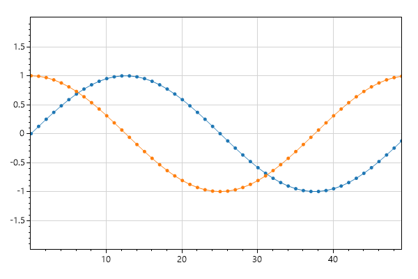
int pointCount = 50;
double[] dataXs = ScottPlot.DataGen.Consecutive(pointCount);
double[] dataSin = ScottPlot.DataGen.Sin(pointCount);
double[] dataCos = ScottPlot.DataGen.Cos(pointCount);
var plt = new ScottPlot.Plot(width, height);
plt.PlotScatter(dataXs, dataSin);
plt.PlotScatter(dataXs, dataCos);
plt.AxisAuto(0, .5); // no horizontal padding, 50% vertical padding
plt.SaveFig(600, 400, "01b_Automatic_Margins.png");
Defined Axis Limits

int pointCount = 50;
double[] dataXs = ScottPlot.DataGen.Consecutive(pointCount);
double[] dataSin = ScottPlot.DataGen.Sin(pointCount);
double[] dataCos = ScottPlot.DataGen.Cos(pointCount);
var plt = new ScottPlot.Plot(width, height);
plt.PlotScatter(dataXs, dataSin);
plt.PlotScatter(dataXs, dataCos);
plt.Axis(2, 8, .2, 1.1); // x1, x2, y1, y2
plt.SaveFig(600, 400, "01c_Defined_Axis_Limits.png");
Zoom and Pan

int pointCount = 50;
double[] dataXs = ScottPlot.DataGen.Consecutive(pointCount);
double[] dataSin = ScottPlot.DataGen.Sin(pointCount);
double[] dataCos = ScottPlot.DataGen.Cos(pointCount);
var plt = new ScottPlot.Plot(width, height);
plt.PlotScatter(dataXs, dataSin);
plt.PlotScatter(dataXs, dataCos);
plt.AxisZoom(2, 2);
plt.AxisPan(-10, .5);
plt.SaveFig(600, 400, "01d_Zoom_and_Pan.png");
Legend

int pointCount = 50;
double[] dataXs = ScottPlot.DataGen.Consecutive(pointCount);
double[] dataSin = ScottPlot.DataGen.Sin(pointCount);
double[] dataCos = ScottPlot.DataGen.Cos(pointCount);
var plt = new ScottPlot.Plot(width, height);
plt.PlotScatter(dataXs, dataSin, label: "first");
plt.PlotScatter(dataXs, dataCos, label: "second");
plt.Legend(location: ScottPlot.legendLocation.lowerLeft);
plt.SaveFig(600, 400, "01e_Legend.png");
Custom Marker Shapes

int pointCount = 50;
double[] dataXs = ScottPlot.DataGen.Consecutive(pointCount);
double[] dataSin = ScottPlot.DataGen.Sin(pointCount);
double[] dataCos = ScottPlot.DataGen.Cos(pointCount);
var plt = new ScottPlot.Plot(width, height);
plt.PlotScatter(dataXs, dataSin, label: "sin", markerShape: ScottPlot.MarkerShape.openCircle);
plt.PlotScatter(dataXs, dataCos, label: "cos", markerShape: ScottPlot.MarkerShape.filledSquare);
plt.Legend();
plt.SaveFig(600, 400, "01f_Custom_Marker_Shapes.png");
All Marker Shapes
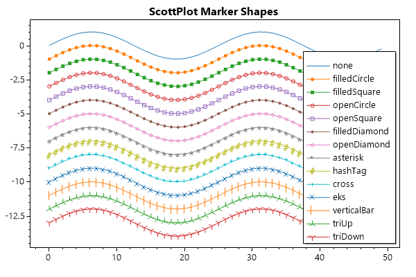
int pointCount = 50;
double[] dataXs = ScottPlot.DataGen.Consecutive(pointCount);
double[] dataSin = ScottPlot.DataGen.Sin(pointCount);
double[] dataCos = ScottPlot.DataGen.Cos(pointCount);
var plt = new ScottPlot.Plot(width, height);
plt.Title("ScottPlot Marker Shapes");
plt.Grid(false);
// plot a sine wave for every marker available
string[] markerShapeNames = Enum.GetNames(typeof(ScottPlot.MarkerShape));
for (int i = 0; i < markerShapeNames.Length; i++)
{
string markerShapeName = markerShapeNames[i];
var markerShape = (ScottPlot.MarkerShape)Enum.Parse(typeof(ScottPlot.MarkerShape), markerShapeName);
double[] stackedSin = ScottPlot.DataGen.Sin(dataXs.Length, 2, -i);
plt.PlotScatter(dataXs, stackedSin, label: markerShapeName, markerShape: markerShape);
}
plt.Legend(fontSize: 10);
plt.SaveFig(600, 400, "01g_All_Marker_Shapes.png");
Styling Scatter Plots
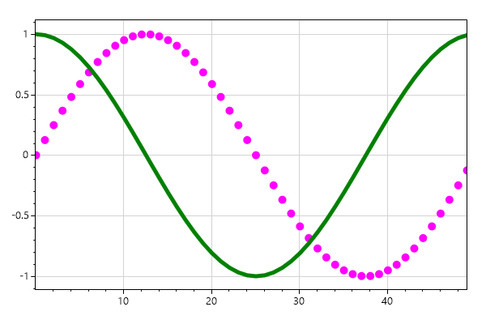
int pointCount = 50;
double[] dataXs = ScottPlot.DataGen.Consecutive(pointCount);
double[] dataSin = ScottPlot.DataGen.Sin(pointCount);
double[] dataCos = ScottPlot.DataGen.Cos(pointCount);
double[] dataCos2 = ScottPlot.DataGen.Cos(pointCount, mult: -1);
var plt = new ScottPlot.Plot(width, height);
plt.PlotScatter(dataXs, dataSin, color: Color.Magenta, lineWidth: 0, markerSize: 10, label: "sin");
plt.PlotScatter(dataXs, dataCos, color: Color.Green, lineWidth: 5, markerSize: 0, label: "cos");
plt.PlotScatter(dataXs, dataCos2, color: Color.Blue, label: "-cos",
lineStyle: ScottPlot.LineStyle.DashDot, lineWidth: 3, markerSize: 0);
plt.Legend(fixedLineWidth: false);
plt.SaveFig(600, 400, "02_Styling_Scatter_Plots.png");
Plot XY Data

Random rand = new Random(0);
int pointCount = 50;
double[] dataRandom1 = ScottPlot.DataGen.RandomNormal(rand, pointCount);
double[] dataRandom2 = ScottPlot.DataGen.RandomNormal(rand, pointCount);
var plt = new ScottPlot.Plot(width, height);
plt.PlotScatter(dataRandom1, dataRandom2);
plt.SaveFig(600, 400, "03_Plot_XY_Data.png");
Plot Lines Only

Random rand = new Random(0);
int pointCount = 50;
double[] dataRandom1 = ScottPlot.DataGen.RandomNormal(rand, pointCount, 1);
double[] dataRandom2 = ScottPlot.DataGen.RandomNormal(rand, pointCount, 2);
double[] dataRandom3 = ScottPlot.DataGen.RandomNormal(rand, pointCount, 3);
double[] dataRandom4 = ScottPlot.DataGen.RandomNormal(rand, pointCount, 4);
var plt = new ScottPlot.Plot(width, height);
plt.PlotScatter(dataRandom1, dataRandom2, markerSize: 0);
plt.PlotScatter(dataRandom3, dataRandom4, markerSize: 0);
plt.SaveFig(600, 400, "04_Plot_Lines_Only.png");
Plot Points Only

Random rand = new Random(0);
int pointCount = 50;
double[] dataRandom1 = ScottPlot.DataGen.RandomNormal(rand, pointCount, 1);
double[] dataRandom2 = ScottPlot.DataGen.RandomNormal(rand, pointCount, 2);
double[] dataRandom3 = ScottPlot.DataGen.RandomNormal(rand, pointCount, 3);
double[] dataRandom4 = ScottPlot.DataGen.RandomNormal(rand, pointCount, 4);
var plt = new ScottPlot.Plot(width, height);
plt.PlotScatter(dataRandom1, dataRandom2, lineWidth: 0);
plt.PlotScatter(dataRandom3, dataRandom4, lineWidth: 0);
plt.SaveFig(600, 400, "05_Plot_Points_Only.png");
Custom LineStyles

Random rand = new Random(0);
int pointCount = 50;
double[] dataRandom1 = ScottPlot.DataGen.RandomNormal(rand, pointCount, 1);
double[] dataRandom2 = ScottPlot.DataGen.RandomNormal(rand, pointCount, 2);
double[] dataRandom3 = ScottPlot.DataGen.RandomNormal(rand, pointCount, 3);
double[] dataRandom4 = ScottPlot.DataGen.RandomNormal(rand, pointCount, 4);
var plt = new ScottPlot.Plot(width, height);
plt.PlotScatter(dataRandom1, dataRandom2, label: "dash", lineStyle: ScottPlot.LineStyle.Dash);
plt.PlotScatter(dataRandom3, dataRandom4, label: "dash dot dot", lineStyle: ScottPlot.LineStyle.DashDotDot);
plt.Legend();
plt.SaveFig(600, 400, "06b_Custom_LineStyles.png");
Styling XY Plots

Random rand = new Random(0);
int pointCount = 50;
double[] dataRandom1 = ScottPlot.DataGen.RandomNormal(rand, pointCount, 1);
double[] dataRandom2 = ScottPlot.DataGen.RandomNormal(rand, pointCount, 2);
double[] dataRandom3 = ScottPlot.DataGen.RandomNormal(rand, pointCount, 3);
double[] dataRandom4 = ScottPlot.DataGen.RandomNormal(rand, pointCount, 4);
var plt = new ScottPlot.Plot(width, height);
plt.PlotScatter(dataRandom1, dataRandom2, color: Color.Magenta, lineWidth: 3, markerSize: 15);
plt.PlotScatter(dataRandom3, dataRandom4, color: Color.Green, lineWidth: 3, markerSize: 15);
plt.SaveFig(600, 400, "06_Styling_XY_Plots.png");
Plotting Points

int pointCount = 50;
double[] dataXs = ScottPlot.DataGen.Consecutive(pointCount);
double[] dataSin = ScottPlot.DataGen.Sin(pointCount);
double[] dataCos = ScottPlot.DataGen.Cos(pointCount);
var plt = new ScottPlot.Plot(width, height);
plt.PlotScatter(dataXs, dataSin);
plt.PlotScatter(dataXs, dataCos);
plt.PlotPoint(25, 0.8);
plt.PlotPoint(30, 0.3, color: Color.Magenta, markerSize: 15);
plt.SaveFig(600, 400, "07_Plotting_Points.png");
Plotting Arrows

int pointCount = 50;
double[] dataXs = ScottPlot.DataGen.Consecutive(pointCount);
double[] dataSin = ScottPlot.DataGen.Sin(pointCount);
var plt = new ScottPlot.Plot(width, height);
plt.PlotScatter(dataXs, dataSin);
plt.PlotArrow(25, 0, 27, .2, label: "default");
plt.PlotArrow(27, -.25, 23, -.5, label: "big", lineWidth: 10);
plt.PlotArrow(12, 1, 12, 0, label: "skinny", arrowheadLength: 10);
plt.PlotArrow(20, .6, 20, 1, label: "fat", arrowheadWidth: 10);
plt.Legend(fixedLineWidth: false);
plt.SaveFig(600, 400, "08b_Plotting_Arrows.png");
Plotting Text

int pointCount = 50;
double[] dataXs = ScottPlot.DataGen.Consecutive(pointCount);
double[] dataSin = ScottPlot.DataGen.Sin(pointCount);
double[] dataCos = ScottPlot.DataGen.Cos(pointCount);
var plt = new ScottPlot.Plot(width, height);
plt.PlotScatter(dataXs, dataSin);
plt.PlotScatter(dataXs, dataCos);
plt.PlotPoint(25, 0.8, color: Color.Green);
plt.PlotText(" important point", 25, 0.8,
color: Color.Green);
plt.PlotPoint(30, 0.3, color: Color.Black, markerSize: 15);
plt.PlotText(" default alignment", 30, 0.3,
fontSize: 16, bold: true, color: Color.Magenta);
plt.PlotPoint(30, 0, color: Color.Black, markerSize: 15);
plt.PlotText("middle center", 30, 0,
fontSize: 16, bold: true, color: Color.Magenta,
alignment: ScottPlot.TextAlignment.middleCenter);
plt.PlotPoint(30, -0.3, color: Color.Black, markerSize: 15);
plt.PlotText("upper left", 30, -0.3,
fontSize: 16, bold: true, color: Color.Magenta,
alignment: ScottPlot.TextAlignment.upperLeft);
plt.PlotPoint(5, -.5, color: Color.Blue, markerSize: 15);
plt.PlotText(" Rotated Text", 5, -.5,
fontSize: 16, color: Color.Blue, bold: true, rotation: -30);
plt.PlotText("Framed Text", 15, -.6,
fontSize: 16, color: Color.White, bold: true, frame: true, frameColor: Color.DarkRed);
plt.SaveFig(600, 400, "08_Plotting_Text.png");
Clearing Plots
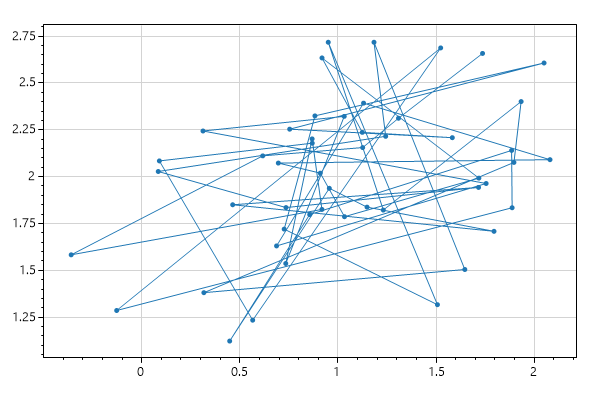
int pointCount = 50;
double[] dataXs = ScottPlot.DataGen.Consecutive(pointCount);
double[] dataSin = ScottPlot.DataGen.Sin(pointCount);
double[] dataCos = ScottPlot.DataGen.Cos(pointCount);
Random rand = new Random(0);
double[] dataRandom1 = ScottPlot.DataGen.RandomNormal(rand, pointCount, 1);
double[] dataRandom2 = ScottPlot.DataGen.RandomNormal(rand, pointCount, 2);
var plt = new ScottPlot.Plot(width, height);
plt.PlotScatter(dataXs, dataSin);
plt.PlotScatter(dataXs, dataCos);
plt.Clear();
plt.PlotScatter(dataRandom1, dataRandom2);
plt.SaveFig(600, 400, "09_Clearing_Plots.png");
Modifying Plotted Data

int pointCount = 50;
double[] dataXs = ScottPlot.DataGen.Consecutive(pointCount);
double[] dataSin = ScottPlot.DataGen.Sin(pointCount);
double[] dataCos = ScottPlot.DataGen.Cos(pointCount);
var plt = new ScottPlot.Plot(width, height);
plt.PlotScatter(dataXs, dataSin);
plt.PlotScatter(dataXs, dataCos);
// After an array is plotted with PlotSignal() or PlotScatter() its contents
// can be updated (by changing values in the array) and they will be displayed
// at the next render. This makes it easy to create live displays.
for (int i = 10; i < 20; i++)
{
dataSin[i] = i / 10.0;
dataCos[i] = 2 * i / 10.0;
}
plt.SaveFig(600, 400, "10_Modifying_Plotted_Data.png");
Modify Styles After Plotting
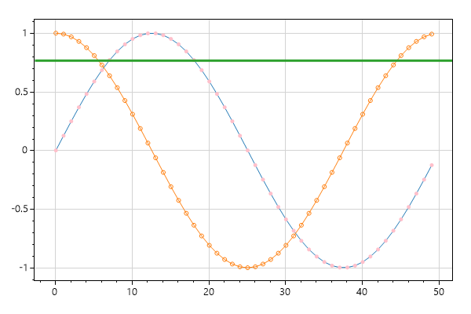
int pointCount = 50;
double[] dataXs = ScottPlot.DataGen.Consecutive(pointCount);
double[] dataSin = ScottPlot.DataGen.Sin(pointCount);
double[] dataCos = ScottPlot.DataGen.Cos(pointCount);
var plt = new ScottPlot.Plot(width, height);
// All Plot functions return the object that was just created.
var scatter1 = plt.PlotScatter(dataXs, dataSin);
var scatter2 = plt.PlotScatter(dataXs, dataCos);
var horizontalLine = plt.PlotHLine(0, lineWidth: 3);
// This allows you to modify the object's properties later.
scatter1.color = Color.Pink;
scatter2.markerShape = ScottPlot.MarkerShape.openCircle;
horizontalLine.position = 0.7654;
plt.SaveFig(600, 400, "11_Modify_Styles_After_Plotting.png");
Date Axis

Random rand = new Random(0);
double[] price = ScottPlot.DataGen.RandomWalk(rand, 60 * 8);
DateTime start = new DateTime(2019, 08, 25, 8, 30, 00);
double pointsPerDay = 24 * 60; // one point per minute
var plt = new ScottPlot.Plot(width, height);
plt.PlotSignal(price, sampleRate: pointsPerDay, xOffset: start.ToOADate());
plt.Ticks(dateTimeX: true);
plt.YLabel("Price");
plt.XLabel("Date and Time");
plt.SaveFig(600, 400, "12_Date_Axis.png");
Ruler Mode

int pointCount = 50;
double[] dataXs = ScottPlot.DataGen.Consecutive(pointCount);
double[] dataSin = ScottPlot.DataGen.Sin(pointCount);
double[] dataCos = ScottPlot.DataGen.Cos(pointCount);
var plt = new ScottPlot.Plot(width, height);
plt.PlotScatter(dataXs, dataSin);
plt.PlotScatter(dataXs, dataCos);
plt.Frame(right: false, top: false);
plt.Ticks(rulerModeX: true, rulerModeY: true); // enable ruler mode like this
plt.AxisAuto(0, 0);
plt.SaveFig(600, 400, "13_Ruler_Mode.png");
Hide Tick Labels

var plt = new ScottPlot.Plot(width, height);
plt.Title("Hide Tick Labels (but not ticks)");
plt.PlotSignal(ScottPlot.DataGen.Sin(50));
plt.Ticks(displayTickLabelsX: false);
plt.SaveFig(600, 400, "14b_Hide_Tick_Labels.png");
Custom Tick Labels

var plt = new ScottPlot.Plot(width, height);
plt.Title("Custom Tick Positions and Labels");
plt.PlotSignal(ScottPlot.DataGen.Sin(50));
double[] xPositions = { 7, 21, 37, 46 };
string[] xLabels = { "VII", "XXI", "XXXVII", "XLVI" };
plt.XTicks(xPositions, xLabels);
double[] yPositions = { -1, 0, .5, 1 };
string[] yPabels = { "bottom", "center", "half", "top" };
plt.YTicks(yPositions, yPabels);
plt.SaveFig(600, 400, "14_Custom_Tick_Labels.png");
Descending Ticks

var plt = new ScottPlot.Plot(width, height);
// to simulate an inverted (descending) horizontal axis, plot in the negative space
plt.PlotSignal(ScottPlot.DataGen.Sin(50), xOffset: -50);
// then invert the sign of the horizontal axis labels
plt.Ticks(invertSignX: true);
plt.Ticks(invertSignY: true);
plt.SaveFig(600, 400, "15_Descending_Ticks.png");
Small Plot
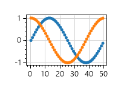
int pointCount = 50;
double[] dataXs = ScottPlot.DataGen.Consecutive(pointCount);
double[] dataSin = ScottPlot.DataGen.Sin(pointCount);
double[] dataCos = ScottPlot.DataGen.Cos(pointCount);
var plt = new ScottPlot.Plot(200, 150);
plt.PlotScatter(dataXs, dataSin);
plt.PlotScatter(dataXs, dataCos);
plt.SaveFig(600, 400, "20_Small_Plot.png");
Title and Axis Labels
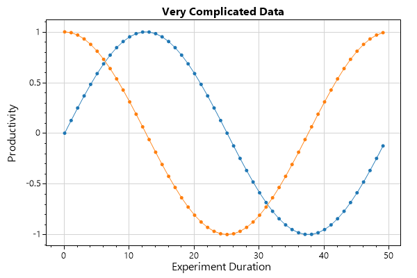
int pointCount = 50;
double[] dataXs = ScottPlot.DataGen.Consecutive(pointCount);
double[] dataSin = ScottPlot.DataGen.Sin(pointCount);
double[] dataCos = ScottPlot.DataGen.Cos(pointCount);
var plt = new ScottPlot.Plot(width, height);
plt.PlotScatter(dataXs, dataSin);
plt.PlotScatter(dataXs, dataCos);
plt.Title("Very Complicated Data");
plt.XLabel("Experiment Duration");
plt.YLabel("Productivity");
plt.SaveFig(600, 400, "21a_Title_and_Axis_Labels.png");
Custom Padding

int pointCount = 50;
double[] dataXs = ScottPlot.DataGen.Consecutive(pointCount);
double[] dataSin = ScottPlot.DataGen.Sin(pointCount);
double[] dataCos = ScottPlot.DataGen.Cos(pointCount);
var plt = new ScottPlot.Plot(width, height);
plt.PlotScatter(dataXs, dataSin);
plt.PlotScatter(dataXs, dataCos);
plt.Style(figBg: Color.LightBlue);
// Layout component sizes are typically auto-calculated by TightenLayout()
// Plots without title or axis labels typically extend right to the edge of the image
// You can call Layout() to manually define the sizes of plot components
plt.Layout(yScaleWidth: 80, titleHeight: 50, xLabelHeight: 20, y2LabelWidth: 20);
plt.SaveFig(600, 400, "21b_Custom_Padding.png");
Automatic Left Padding
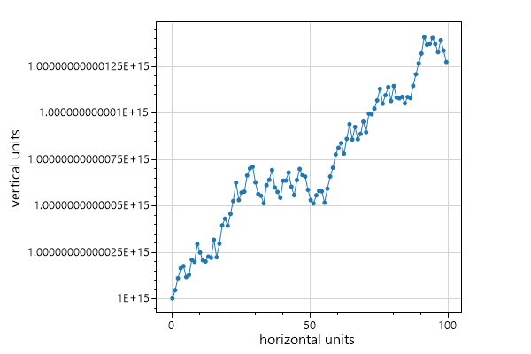
var plt = new ScottPlot.Plot(width, height);
Random rand = new Random(0);
double[] xs = ScottPlot.DataGen.Consecutive(100);
double[] ys = ScottPlot.DataGen.RandomWalk(rand, 100, 1e2, 1e15);
plt.PlotScatter(xs, ys);
plt.YLabel("vertical units");
plt.XLabel("horizontal units");
// this can be problematic because Y labels get very large
plt.Ticks(useOffsetNotation: false, useMultiplierNotation: false);
// tightening with a render is the best way to get the axes right
plt.TightenLayout(render: true);
plt.SaveFig(600, 400, "21c_Automatic_Left_Padding.png");
Single Axis With No Padding

var plt = new ScottPlot.Plot(width, height);
Random rand = new Random(0);
double[] xs = ScottPlot.DataGen.Consecutive(100);
double[] ys = ScottPlot.DataGen.RandomWalk(rand, 100, 1e2, 1e15);
plt.PlotScatter(xs, ys);
plt.Style(figBg: Color.LightBlue);
// customize your tick and frame style then tighten the layout
plt.Ticks(rulerModeX: true, displayTicksY: false);
plt.Frame(left: false, right: false, top: false);
plt.TightenLayout(padding: 0, render: true);
plt.SaveFig(600, 400, "21d_Single_Axis_With_No_Padding.png");
Custom Colors

int pointCount = 50;
double[] dataXs = ScottPlot.DataGen.Consecutive(pointCount);
double[] dataSin = ScottPlot.DataGen.Sin(pointCount);
double[] dataCos = ScottPlot.DataGen.Cos(pointCount);
var plt = new ScottPlot.Plot(width, height);
Color figureBgColor = ColorTranslator.FromHtml("#001021");
Color dataBgColor = ColorTranslator.FromHtml("#021d38");
plt.Style(figBg: figureBgColor, dataBg: dataBgColor);
plt.Grid(color: ColorTranslator.FromHtml("#273c51"));
plt.Ticks(color: Color.LightGray);
plt.PlotScatter(dataXs, dataSin);
plt.PlotScatter(dataXs, dataCos);
plt.Title("Very Complicated Data", color: Color.White);
plt.XLabel("Experiment Duration", color: Color.LightGray);
plt.YLabel("Productivity", color: Color.LightGray);
plt.SaveFig(600, 400, "22_Custom_Colors.png");
Frameless Plot

int pointCount = 50;
double[] dataXs = ScottPlot.DataGen.Consecutive(pointCount);
double[] dataSin = ScottPlot.DataGen.Sin(pointCount);
double[] dataCos = ScottPlot.DataGen.Cos(pointCount);
var plt = new ScottPlot.Plot(width, height);
Color figureBgColor = ColorTranslator.FromHtml("#001021");
Color dataBgColor = ColorTranslator.FromHtml("#021d38");
plt.Style(figBg: figureBgColor, dataBg: dataBgColor);
plt.Grid(color: ColorTranslator.FromHtml("#273c51"));
plt.Ticks(displayTicksX: false, displayTicksY: false);
plt.Frame(drawFrame: false); // dont draw a square around the plot
plt.TightenLayout(padding: 0); // dont pad the data area at all
plt.PlotScatter(dataXs, dataSin);
plt.PlotScatter(dataXs, dataCos);
plt.SaveFig(600, 400, "23_Frameless_Plot.png");
Disable the Grid

int pointCount = 50;
double[] dataXs = ScottPlot.DataGen.Consecutive(pointCount);
double[] dataSin = ScottPlot.DataGen.Sin(pointCount);
double[] dataCos = ScottPlot.DataGen.Cos(pointCount);
var plt = new ScottPlot.Plot(width, height);
plt.PlotScatter(dataXs, dataSin);
plt.PlotScatter(dataXs, dataCos);
plt.Grid(false);
plt.SaveFig(600, 400, "24_Disable_the_Grid.png");
Corner Axis Frame

int pointCount = 50;
double[] dataXs = ScottPlot.DataGen.Consecutive(pointCount);
double[] dataSin = ScottPlot.DataGen.Sin(pointCount);
double[] dataCos = ScottPlot.DataGen.Cos(pointCount);
var plt = new ScottPlot.Plot(width, height);
plt.PlotScatter(dataXs, dataSin);
plt.PlotScatter(dataXs, dataCos);
plt.Grid(false);
plt.Frame(right: false, top: false);
plt.SaveFig(600, 400, "25_Corner_Axis_Frame.png");
Horizontal Ticks Only

int pointCount = 50;
double[] dataXs = ScottPlot.DataGen.Consecutive(pointCount);
double[] dataSin = ScottPlot.DataGen.Sin(pointCount);
double[] dataCos = ScottPlot.DataGen.Cos(pointCount);
var plt = new ScottPlot.Plot(width, height);
plt.PlotScatter(dataXs, dataSin);
plt.PlotScatter(dataXs, dataCos);
plt.Grid(false);
plt.Ticks(displayTicksY: false);
plt.Frame(left: false, right: false, top: false);
plt.SaveFig(600, 400, "26_Horizontal_Ticks_Only.png");
Very Large Numbers

Random rand = new Random(0);
int pointCount = 100;
double[] largeXs = ScottPlot.DataGen.Consecutive(pointCount, 1e17);
double[] largeYs = ScottPlot.DataGen.Random(rand, pointCount, 1e21);
var plt = new ScottPlot.Plot(width, height);
plt.PlotScatter(largeXs, largeYs);
plt.SaveFig(600, 400, "27_Very_Large_Numbers.png");
Multiplier Notation Default

double[] tenMillionPoints = ScottPlot.DataGen.SinSweep(10_000_000, 8);
var plt = new ScottPlot.Plot(width, height);
plt.PlotSignal(tenMillionPoints);
plt.SaveFig(600, 400, "28b_Multiplier_Notation_Default.png");
Axis Exponent And Offset
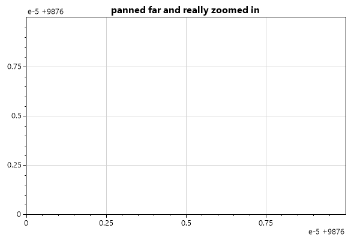
double bigNumber = 9876;
var plt = new ScottPlot.Plot(width, height);
plt.Title("panned far and really zoomed in");
plt.Axis(bigNumber, bigNumber + .00001, bigNumber, bigNumber + .00001);
plt.SaveFig(600, 400, "28_Axis_Exponent_And_Offset.png");
Very Large Images

int pointCount = 50;
double[] dataXs = ScottPlot.DataGen.Consecutive(pointCount);
double[] dataSin = ScottPlot.DataGen.Sin(pointCount);
double[] dataCos = ScottPlot.DataGen.Cos(pointCount);
var plt = new ScottPlot.Plot(2000, 1000);
plt.PlotScatter(dataXs, dataSin);
plt.PlotScatter(dataXs, dataCos);
plt.SaveFig(600, 400, "29_Very_Large_Images.png");
Signal

double[] tenMillionPoints = ScottPlot.DataGen.SinSweep(10_000_000, 8);
// PlotSignal() is much faster than PlotScatter() for large arrays of evenly-spaed data.
// To plot more than 2GB of data, enable "gcAllowVeryLargeObjects" in App.config (Google it)
var plt = new ScottPlot.Plot(width, height);
plt.Title("Displaying 10 million points with PlotSignal()");
plt.Benchmark();
plt.PlotSignal(tenMillionPoints, sampleRate: 20_000);
plt.SaveFig(600, 400, "30a_Signal.png");
SignalConst

double[] tenMillionPoints = ScottPlot.DataGen.SinSweep(10_000_000, 8);
// SignalConst() is faster than PlotSignal() for very large data plots
// - its data cannot be modified after it is loaded
// - here threading was turned off so it renders properly in a console application
// - in GUI applications threading allows it to initially render faster but here it is turned off
var plt = new ScottPlot.Plot(width, height);
plt.Title("Displaying 10 million points with PlotSignalConst()");
plt.Benchmark();
plt.PlotSignalConst(tenMillionPoints, sampleRate: 20_000);
plt.SaveFig(600, 400, "30c_SignalConst.png");
Signal Styling

double[] tenMillionPoints = ScottPlot.DataGen.SinSweep(10_000_000, 8);
var plt = new ScottPlot.Plot(width, height);
plt.PlotSignal(tenMillionPoints, 20000, lineWidth: 3, color: Color.Red);
plt.SaveFig(600, 400, "32_Signal_Styling.png");
Vertical and Horizontal Lines
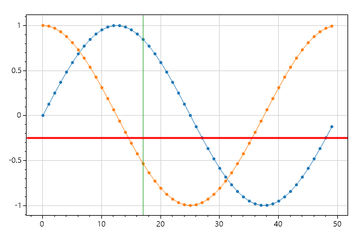
int pointCount = 50;
double[] dataXs = ScottPlot.DataGen.Consecutive(pointCount);
double[] dataSin = ScottPlot.DataGen.Sin(pointCount);
double[] dataCos = ScottPlot.DataGen.Cos(pointCount);
var plt = new ScottPlot.Plot(width, height);
plt.PlotScatter(dataXs, dataSin);
plt.PlotScatter(dataXs, dataCos);
plt.PlotVLine(17);
plt.PlotHLine(-.25, color: Color.Red, lineWidth: 3, lineStyle: ScottPlot.LineStyle.Dash);
plt.SaveFig(600, 400, "40_Vertical_and_Horizontal_Lines.png");
Axis Spans
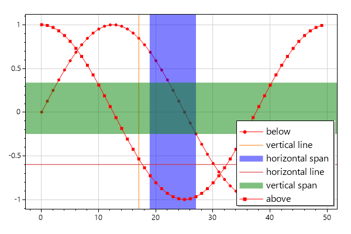
int pointCount = 50;
double[] dataXs = ScottPlot.DataGen.Consecutive(pointCount);
double[] dataSin = ScottPlot.DataGen.Sin(pointCount);
double[] dataCos = ScottPlot.DataGen.Cos(pointCount);
var plt = new ScottPlot.Plot(width, height);
// things plotted before spans get covered by them
plt.PlotScatter(dataXs, dataSin, label: "below",
color: Color.Red, markerShape: ScottPlot.MarkerShape.filledCircle);
// vertical lines and horizontal spans both take X-axis positions
plt.PlotVLine(17, label: "vertical line");
plt.PlotVSpan(19, 27, label: "horizontal span", color: Color.Blue);
// horizontal lines and vertical spans both take Y-axis positions
plt.PlotHLine(-.6, label: "horizontal line");
plt.PlotHSpan(-.25, 0.33, label: "vertical span", color: Color.Green);
// things plotted after are displayed on top of the spans
plt.PlotScatter(dataXs, dataCos, label: "above",
color: Color.Red, markerShape: ScottPlot.MarkerShape.filledSquare);
plt.Legend();
plt.SaveFig(600, 400, "41_Axis_Spans.png");
StyleBlue1

int pointCount = 50;
double[] dataXs = ScottPlot.DataGen.Consecutive(pointCount);
double[] dataSin = ScottPlot.DataGen.Sin(pointCount);
double[] dataCos = ScottPlot.DataGen.Cos(pointCount);
var plt = new ScottPlot.Plot(width, height);
plt.PlotScatter(dataXs, dataSin, label: "sin");
plt.PlotScatter(dataXs, dataCos, label: "cos");
plt.Title("Very Complicated Data");
plt.XLabel("Experiment Duration");
plt.YLabel("Productivity");
plt.Legend();
plt.Style(ScottPlot.Style.Blue1);
plt.SaveFig(600, 400, "50_StyleBlue1.png");
StyleBlue2
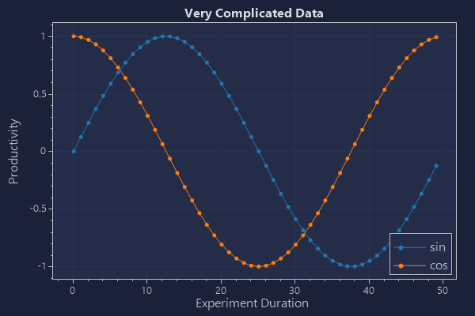
int pointCount = 50;
double[] dataXs = ScottPlot.DataGen.Consecutive(pointCount);
double[] dataSin = ScottPlot.DataGen.Sin(pointCount);
double[] dataCos = ScottPlot.DataGen.Cos(pointCount);
var plt = new ScottPlot.Plot(width, height);
plt.PlotScatter(dataXs, dataSin, label: "sin");
plt.PlotScatter(dataXs, dataCos, label: "cos");
plt.Title("Very Complicated Data");
plt.XLabel("Experiment Duration");
plt.YLabel("Productivity");
plt.Legend();
plt.Style(ScottPlot.Style.Blue2);
plt.SaveFig(600, 400, "51_StyleBlue2.png");
StyleBlue3
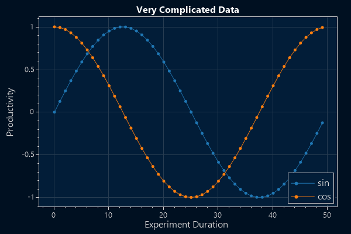
int pointCount = 50;
double[] dataXs = ScottPlot.DataGen.Consecutive(pointCount);
double[] dataSin = ScottPlot.DataGen.Sin(pointCount);
double[] dataCos = ScottPlot.DataGen.Cos(pointCount);
var plt = new ScottPlot.Plot(width, height);
plt.PlotScatter(dataXs, dataSin, label: "sin");
plt.PlotScatter(dataXs, dataCos, label: "cos");
plt.Title("Very Complicated Data");
plt.XLabel("Experiment Duration");
plt.YLabel("Productivity");
plt.Legend();
plt.Style(ScottPlot.Style.Blue3);
plt.SaveFig(600, 400, "52_StyleBlue3.png");
StyleLight1

int pointCount = 50;
double[] dataXs = ScottPlot.DataGen.Consecutive(pointCount);
double[] dataSin = ScottPlot.DataGen.Sin(pointCount);
double[] dataCos = ScottPlot.DataGen.Cos(pointCount);
var plt = new ScottPlot.Plot(width, height);
plt.PlotScatter(dataXs, dataSin, label: "sin");
plt.PlotScatter(dataXs, dataCos, label: "cos");
plt.Title("Very Complicated Data");
plt.XLabel("Experiment Duration");
plt.YLabel("Productivity");
plt.Legend();
plt.Style(ScottPlot.Style.Light1);
plt.SaveFig(600, 400, "53_StyleLight1.png");
StyleLight2

int pointCount = 50;
double[] dataXs = ScottPlot.DataGen.Consecutive(pointCount);
double[] dataSin = ScottPlot.DataGen.Sin(pointCount);
double[] dataCos = ScottPlot.DataGen.Cos(pointCount);
var plt = new ScottPlot.Plot(width, height);
plt.PlotScatter(dataXs, dataSin, label: "sin");
plt.PlotScatter(dataXs, dataCos, label: "cos");
plt.Title("Very Complicated Data");
plt.XLabel("Experiment Duration");
plt.YLabel("Productivity");
plt.Legend();
plt.Style(ScottPlot.Style.Light2);
plt.SaveFig(600, 400, "54_StyleLight2.png");
StyleGray1

int pointCount = 50;
double[] dataXs = ScottPlot.DataGen.Consecutive(pointCount);
double[] dataSin = ScottPlot.DataGen.Sin(pointCount);
double[] dataCos = ScottPlot.DataGen.Cos(pointCount);
var plt = new ScottPlot.Plot(width, height);
plt.PlotScatter(dataXs, dataSin, label: "sin");
plt.PlotScatter(dataXs, dataCos, label: "cos");
plt.Title("Very Complicated Data");
plt.XLabel("Experiment Duration");
plt.YLabel("Productivity");
plt.Legend();
plt.Style(ScottPlot.Style.Gray1);
plt.SaveFig(600, 400, "55_StyleGray1.png");
StyleGray2

int pointCount = 50;
double[] dataXs = ScottPlot.DataGen.Consecutive(pointCount);
double[] dataSin = ScottPlot.DataGen.Sin(pointCount);
double[] dataCos = ScottPlot.DataGen.Cos(pointCount);
var plt = new ScottPlot.Plot(width, height);
plt.PlotScatter(dataXs, dataSin, label: "sin");
plt.PlotScatter(dataXs, dataCos, label: "cos");
plt.Title("Very Complicated Data");
plt.XLabel("Experiment Duration");
plt.YLabel("Productivity");
plt.Legend();
plt.Style(ScottPlot.Style.Gray2);
plt.SaveFig(600, 400, "56_StyleGray2.png");
StyleBlack

int pointCount = 50;
double[] dataXs = ScottPlot.DataGen.Consecutive(pointCount);
double[] dataSin = ScottPlot.DataGen.Sin(pointCount);
double[] dataCos = ScottPlot.DataGen.Cos(pointCount);
var plt = new ScottPlot.Plot(width, height);
plt.PlotScatter(dataXs, dataSin, label: "sin");
plt.PlotScatter(dataXs, dataCos, label: "cos");
plt.Title("Very Complicated Data");
plt.XLabel("Experiment Duration");
plt.YLabel("Productivity");
plt.Legend();
plt.Style(ScottPlot.Style.Black);
plt.SaveFig(600, 400, "57_StyleBlack.png");
StyleDefault

int pointCount = 50;
double[] dataXs = ScottPlot.DataGen.Consecutive(pointCount);
double[] dataSin = ScottPlot.DataGen.Sin(pointCount);
double[] dataCos = ScottPlot.DataGen.Cos(pointCount);
var plt = new ScottPlot.Plot(width, height);
plt.PlotScatter(dataXs, dataSin, label: "sin");
plt.PlotScatter(dataXs, dataCos, label: "cos");
plt.Title("Very Complicated Data");
plt.XLabel("Experiment Duration");
plt.YLabel("Productivity");
plt.Legend();
plt.Style(ScottPlot.Style.Default);
plt.SaveFig(600, 400, "58_StyleDefault.png");
StyleControl

int pointCount = 50;
double[] dataXs = ScottPlot.DataGen.Consecutive(pointCount);
double[] dataSin = ScottPlot.DataGen.Sin(pointCount);
double[] dataCos = ScottPlot.DataGen.Cos(pointCount);
var plt = new ScottPlot.Plot(width, height);
plt.PlotScatter(dataXs, dataSin, label: "sin");
plt.PlotScatter(dataXs, dataCos, label: "cos");
plt.Title("Very Complicated Data");
plt.XLabel("Experiment Duration");
plt.YLabel("Productivity");
plt.Legend();
plt.Style(ScottPlot.Style.Control);
plt.SaveFig(600, 400, "59_StyleControl.png");
Plotting With Errorbars

var plt = new ScottPlot.Plot(width, height);
plt.Grid(false);
for (int plotNumber = 0; plotNumber < 3; plotNumber++)
{
// create random data to plot
Random rand = new Random(plotNumber);
int pointCount = 20;
double[] dataX = new double[pointCount];
double[] dataY = new double[pointCount];
double[] errorY = new double[pointCount];
double[] errorX = new double[pointCount];
for (int i = 0; i < pointCount; i++)
{
dataX[i] = i + rand.NextDouble();
dataY[i] = rand.NextDouble() * 100 + 100 * plotNumber;
errorX[i] = rand.NextDouble();
errorY[i] = rand.NextDouble() * 10;
}
// demonstrate different ways to plot errorbars
if (plotNumber == 0)
plt.PlotScatter(dataX, dataY, lineWidth: 0, errorY: errorY, errorX: errorX,
label: $"X and Y errors");
else if (plotNumber == 1)
plt.PlotScatter(dataX, dataY, lineWidth: 0, errorY: errorY,
label: $"Y errors only");
else
plt.PlotScatter(dataX, dataY, errorY: errorY, errorX: errorX,
label: $"Connected Errors");
}
plt.Title("Scatter Plot with Errorbars");
plt.Legend();
plt.SaveFig(600, 400, "60_Plotting_With_Errorbars.png");
Plot Bar Data

int pointCount = 50;
double[] dataXs = ScottPlot.DataGen.Consecutive(pointCount);
double[] dataSin = ScottPlot.DataGen.Sin(pointCount);
double[] dataCos = ScottPlot.DataGen.Cos(pointCount);
// create demo data to use for errorbars
double[] yErr = new double[dataSin.Length];
for (int i = 0; i < yErr.Length; i++)
yErr[i] = dataSin[i] / 5 + .025;
var plt = new ScottPlot.Plot(width, height);
plt.Title("Bar Plot With Error Bars");
plt.PlotBar(dataXs, dataSin, barWidth: .5, errorY: yErr, errorCapSize: 2);
plt.SaveFig(600, 400, "61_Plot_Bar_Data.png");
Plot Bar Data Fancy

// generate some more complex data
Random rand = new Random(0);
int pointCount = 10;
double[] Xs = new double[pointCount];
double[] dataA = new double[pointCount];
double[] errorA = new double[pointCount];
double[] dataB = new double[pointCount];
double[] errorB = new double[pointCount];
for (int i = 0; i < pointCount; i++)
{
Xs[i] = i * 10;
dataA[i] = rand.NextDouble() * 100;
dataB[i] = rand.NextDouble() * 100;
errorA[i] = rand.NextDouble() * 10;
errorB[i] = rand.NextDouble() * 10;
}
var plt = new ScottPlot.Plot(width, height);
plt.Title("Multiple Bar Plots");
plt.Grid(false);
// customize barWidth and xOffset to squeeze grouped bars together
plt.PlotBar(Xs, dataA, errorY: errorA, label: "data A", barWidth: 3.2, xOffset: -2);
plt.PlotBar(Xs, dataB, errorY: errorB, label: "data B", barWidth: 3.2, xOffset: 2);
plt.Axis(null, null, 0, null);
plt.Legend();
string[] labels = { "one", "two", "three", "four", "five", "six", "seven", "eight", "nine", "ten" };
plt.XTicks(Xs, labels);
plt.SaveFig(600, 400, "62_Plot_Bar_Data_Fancy.png");
Step Plot

int pointCount = 50;
double[] dataXs = ScottPlot.DataGen.Consecutive(pointCount);
double[] dataSin = ScottPlot.DataGen.Sin(pointCount);
double[] dataCos = ScottPlot.DataGen.Cos(pointCount);
var plt = new ScottPlot.Plot(width, height);
plt.PlotStep(dataXs, dataSin);
plt.PlotStep(dataXs, dataCos);
plt.SaveFig(600, 400, "63_Step_Plot.png");
Manual Grid Spacing
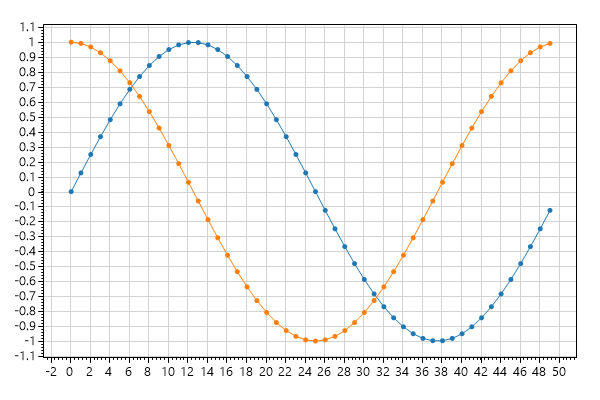
int pointCount = 50;
double[] dataXs = ScottPlot.DataGen.Consecutive(pointCount);
double[] dataSin = ScottPlot.DataGen.Sin(pointCount);
double[] dataCos = ScottPlot.DataGen.Cos(pointCount);
var plt = new ScottPlot.Plot(width, height);
plt.PlotScatter(dataXs, dataSin);
plt.PlotScatter(dataXs, dataCos);
plt.Grid(xSpacing: 2, ySpacing: .1);
plt.SaveFig(600, 400, "64_Manual_Grid_Spacing.png");
CPH

Random rand = new Random(0);
double[] values1 = ScottPlot.DataGen.RandomNormal(rand, pointCount: 1000, mean: 50, stdDev: 20);
double[] values2 = ScottPlot.DataGen.RandomNormal(rand, pointCount: 1000, mean: 45, stdDev: 25);
var hist1 = new ScottPlot.Statistics.Histogram(values1, min: 0, max: 100);
var hist2 = new ScottPlot.Statistics.Histogram(values2, min: 0, max: 100);
var plt = new ScottPlot.Plot(width, height);
plt.Title("Cumulative Probability Histogram");
plt.YLabel("Probability (fraction)");
plt.XLabel("Value (units)");
plt.PlotStep(hist1.bins, hist1.cumulativeFrac, lineWidth: 1.5, label: "sample A");
plt.PlotStep(hist2.bins, hist2.cumulativeFrac, lineWidth: 1.5, label: "sample B");
plt.Legend();
plt.Axis(null, null, 0, 1);
plt.SaveFig(600, 400, "66_CPH.png");
Candlestick Days

ScottPlot.OHLC[] ohlcs = ScottPlot.DataGen.RandomStockPrices(rand: null, pointCount: 30, deltaDays: 1);
var plt = new ScottPlot.Plot(width: 800, height: 400);
plt.Title("Daily Candlestick Chart (weekends skipped)");
plt.YLabel("Stock Price (USD)");
plt.PlotCandlestick(ohlcs);
plt.Ticks(dateTimeX: true);
plt.SaveFig(600, 400, "67a_Candlestick_Days.png");
Candlestick Days Evenly Spaced

// start with stock prices which have unevenly spaced time points (weekends are skipped)
ScottPlot.OHLC[] ohlcs = ScottPlot.DataGen.RandomStockPrices(rand: null, pointCount: 30);
// replace timestamps with a series of numbers starting at 0
for (int i = 0; i < ohlcs.Length; i++)
ohlcs[i].time = i;
// plot the candlesticks (the horizontal axis will start at 0)
var plt = new ScottPlot.Plot(width: 800, height: 400);
plt.Title("Daily Candlestick Chart (evenly spaced)");
plt.YLabel("Stock Price (USD)");
plt.PlotCandlestick(ohlcs);
// create ticks manually
double[] tickPositions = { 0, 6, 13, 20, 27 };
string[] tickLabels = { "Sep 23", "Sep 30", "Oct 7", "Oct 14", "Oct 21" };
plt.XTicks(tickPositions, tickLabels);
plt.SaveFig(600, 400, "67b_Candlestick_Days_Evenly_Spaced.png");
Candlestick

ScottPlot.OHLC[] ohlcs = ScottPlot.DataGen.RandomStockPrices(rand: null, pointCount: 35, deltaMinutes: 10);
var plt = new ScottPlot.Plot(width: 800, height: 400);
plt.Title("Ten Minute Candlestick Chart");
plt.YLabel("Stock Price (USD)");
plt.PlotCandlestick(ohlcs);
plt.Ticks(dateTimeX: true);
plt.SaveFig(600, 400, "67_Candlestick.png");
OHLC

ScottPlot.OHLC[] ohlcs = ScottPlot.DataGen.RandomStockPrices(rand: null, pointCount: 60, deltaMinutes: 10);
var plt = new ScottPlot.Plot(width, height);
plt.Title("Open/High/Low/Close (OHLC) Chart");
plt.YLabel("Stock Price (USD)");
plt.PlotOHLC(ohlcs);
plt.Ticks(dateTimeX: true);
plt.SaveFig(600, 400, "68_OHLC.png");
Save Scatter Data
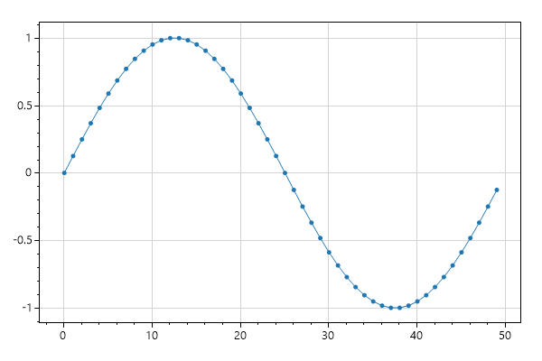
int pointCount = 50;
double[] dataXs = ScottPlot.DataGen.Consecutive(pointCount);
double[] dataSin = ScottPlot.DataGen.Sin(pointCount);
var plt = new ScottPlot.Plot(width, height);
var scatter = plt.PlotScatter(dataXs, dataSin);
scatter.SaveCSV("scatter.csv");
plt.SaveFig(600, 400, "70_Save_Scatter_Data.png");
Save Signal Data
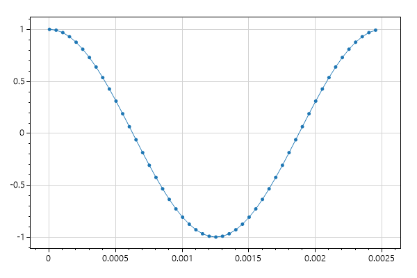
int pointCount = 50;
double[] dataCos = ScottPlot.DataGen.Cos(pointCount);
var plt = new ScottPlot.Plot(width, height);
var signal = plt.PlotSignal(dataCos, sampleRate: 20_000);
signal.SaveCSV("signal.csv");
plt.SaveFig(600, 400, "71_Save_Signal_Data.png");
Custom Fonts
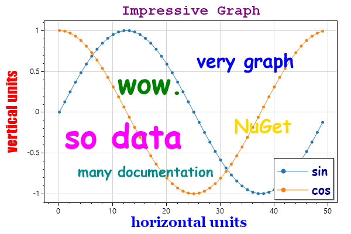
int pointCount = 50;
double[] dataXs = ScottPlot.DataGen.Consecutive(pointCount);
double[] dataSin = ScottPlot.DataGen.Sin(pointCount);
double[] dataCos = ScottPlot.DataGen.Cos(pointCount);
var plt = new ScottPlot.Plot(width, height);
plt.Title("Impressive Graph", fontName: "courier new", fontSize: 24, color: Color.Purple, bold: true);
plt.YLabel("vertical units", fontName: "impact", fontSize: 24, color: Color.Red, bold: true);
plt.XLabel("horizontal units", fontName: "georgia", fontSize: 24, color: Color.Blue, bold: true);
plt.PlotScatter(dataXs, dataSin, label: "sin");
plt.PlotScatter(dataXs, dataCos, label: "cos");
plt.PlotText("very graph", 25, .8, fontName: "comic sans ms", fontSize: 24, color: Color.Blue, bold: true);
plt.PlotText("so data", 0, 0, fontName: "comic sans ms", fontSize: 42, color: Color.Magenta, bold: true);
plt.PlotText("many documentation", 3, -.6, fontName: "comic sans ms", fontSize: 18, color: Color.DarkCyan, bold: true);
plt.PlotText("wow.", 10, .6, fontName: "comic sans ms", fontSize: 36, color: Color.Green, bold: true);
plt.PlotText("NuGet", 32, 0, fontName: "comic sans ms", fontSize: 24, color: Color.Gold, bold: true);
plt.Legend(fontName: "comic sans ms", fontSize: 16, bold: true, fontColor: Color.DarkBlue);
plt.Ticks(fontName: "comic sans ms", fontSize: 12, color: Color.DarkBlue);
plt.SaveFig(600, 400, "72_Custom_Fonts.png");
Multiplot

Random rand = new Random(09241985);
var mp = new ScottPlot.MultiPlot(width: 800, height: 600, rows: 2, cols: 2);
mp.GetSubplot(0, 0).Title("Sine");
mp.GetSubplot(0, 0).PlotSignal(ScottPlot.DataGen.Sin(50));
mp.GetSubplot(0, 1).Title("Cosine");
mp.GetSubplot(0, 1).PlotSignal(ScottPlot.DataGen.Cos(50));
mp.GetSubplot(1, 0).Title("Random Points");
mp.GetSubplot(1, 0).PlotSignal(ScottPlot.DataGen.Random(rand, 50));
mp.GetSubplot(1, 1).Title("Random Walk");
mp.GetSubplot(1, 1).PlotSignal(ScottPlot.DataGen.RandomWalk(rand, 50));
// apply axes and layout from one subplot to another
var plotToAdjust = mp.GetSubplot(1, 0);
var plotReference = mp.GetSubplot(1, 1);
plotToAdjust.MatchAxis(plotReference);
plotToAdjust.MatchLayout(plotReference);
plt.SaveFig(600, 400, "73_Multiplot.png");
Set Visibility

int pointCount = 50;
double[] dataXs = ScottPlot.DataGen.Consecutive(pointCount);
double[] dataSin = ScottPlot.DataGen.Sin(pointCount);
double[] dataCos = ScottPlot.DataGen.Cos(pointCount);
var plt = new ScottPlot.Plot(width, height);
var plottable1 = plt.PlotScatter(dataXs, dataSin, label: "sin");
var plottable2 = plt.PlotScatter(dataXs, dataCos, label: "cos");
plt.Legend();
// after something is plotted you can toggle its visibility
plottable1.visible = true;
plottable2.visible = false;
plt.SaveFig(600, 400, "74_Set_Visibility.png");
Color By Density

// When plotting extremely high density data, you can't always see the trends
// underneath all those overlapping data points. If you send an array of colors
// to PlotSignal(), it will use those colors to display density.
// create an extremely noisy signal with a subtle sine wave beneath it
Random rand = new Random(0);
int pointCount = 100_000;
double[] signal1 = ScottPlot.DataGen.Sin(pointCount, 3);
double[] noise = ScottPlot.DataGen.RandomNormal(rand, pointCount, 0, 5);
double[] data = new double[pointCount];
for (int i = 0; i < data.Length; i++)
data[i] = signal1[i] + noise[i];
// plot the noisy signal using the traditional method
var plt = new ScottPlot.Plot(width, height);
plt.PlotSignal(data, yOffset: -40, color: Color.Red);
// use a color array for displaying data from low to high density
Color[] colors = new Color[]
{
ColorTranslator.FromHtml("#440154"),
ColorTranslator.FromHtml("#39568C"),
ColorTranslator.FromHtml("#1F968B"),
ColorTranslator.FromHtml("#73D055"),
};
plt.PlotSignal(data, colorByDensity: colors);
plt.Title("Color by Density vs. Solid Color");
plt.AxisAuto(0, .1);
plt.SaveFig(600, 400, "75_Color_By_Density.png");
Linear Regression

// Create some linear but noisy data
Random rand = new Random(0);
double[] ys = ScottPlot.DataGen.NoisyLinear(rand, pointCount: 100, noise: 30);
double[] xs = ScottPlot.DataGen.Consecutive(ys.Length);
double x1 = xs[0];
double x2 = xs[xs.Length - 1];
// use the linear regression fitter to fit these data
var model = new ScottPlot.Statistics.LinearRegressionLine(xs, ys);
double y1 = model.GetValueAt(x1);
double y2 = model.GetValueAt(x2);
// plot the original data and add the regression line
var plt = new ScottPlot.Plot(width, height);
plt.PlotScatter(xs, ys, lineWidth: 0, label: "original data");
plt.PlotLine(x1, y1, x2, y2, lineWidth: 3, label: "linear regression");
plt.Legend();
plt.Title(model.ToString());
plt.SaveFig(600, 400, "76_Linear_Regression.png");
Signal Plot First N Points

// Allocate memory for a large number of data points
double[] data = new double[1_000_000]; // start with all zeros
// Only populate the first few points with real data
Random rand = new Random(0);
int lastValueIndex = 500;
for (int i = 1; i <= lastValueIndex; i++)
data[i] = data[i - 1] + rand.NextDouble() - .5;
// A regular Signal plot would display a little data at the start but mostly zeros.
// Using the maxRenderIndex argument allows one to just plot the first N data points.
var plt = new ScottPlot.Plot(width, height);
var sig = plt.PlotSignal(data, maxRenderIndex: lastValueIndex);
plt.Title("Partial Display of a 1,000,000 Element Array");
plt.YLabel("Value");
plt.XLabel("Array Index");
plt.SaveFig(600, 400, "77_Signal_Plot_First_N_Points.png");
// you can change the points to plot later (useful for live plots of incoming data)
sig.maxRenderIndex = 1234;
Log Axis

var plt = new ScottPlot.MultiPlot(width: 800, height: 400, rows: 1, cols: 2);
var subplot1 = plt.subplots[0];
var subplot2 = plt.subplots[1];
// generate some interesting log-distributed data
int pointCount = 200;
double[] dataXs = new double[pointCount];
double[] dataYs = new double[pointCount];
Random rand = new Random(0);
for (int i = 0; i < pointCount; i++)
{
double x = 10.0 * i / pointCount;
dataXs[i] = x;
dataYs[i] = Math.Pow(2, x) + rand.NextDouble() * i;
}
// plot the data using a linear axis
subplot1.PlotScatter(dataXs, dataYs, lineWidth: 0);
subplot1.Title("Data (Linear Scale)");
subplot1.YLabel("Vertical Units");
subplot1.XLabel("Horizontal Units");
subplot1.Ticks(useMultiplierNotation: false);
// plot the same data using a log axis
subplot2.PlotScatter(dataXs, ScottPlot.Tools.Log10(dataYs), lineWidth: 0);
subplot2.Title("Data (Log Scale)");
subplot2.YLabel("Vertical Units (10^)");
subplot2.XLabel("Horizontal Units");
plt.SaveFig(600, 400, "78_Log_Axis.png");
Localized Culture Date Formatting

// generate some data
Random rand = new Random(0);
double[] price = ScottPlot.DataGen.RandomWalk(rand, 60 * 8, 10000);
DateTime start = new DateTime(2019, 08, 25, 8, 30, 00);
double pointsPerDay = 24 * 60;
// create the plot
var plt = new ScottPlot.Plot(width, height);
plt.PlotSignal(price, sampleRate: pointsPerDay, xOffset: start.ToOADate());
plt.Ticks(dateTimeX: true);
plt.YLabel("Price");
plt.XLabel("Date and Time");
plt.Title("Hungarian Formatted DateTime Tick Labels");
plt.Ticks(useMultiplierNotation: false);
// set the localization
var culture = System.Globalization.CultureInfo.CreateSpecificCulture("hu"); // Hungarian
plt.SetCulture(culture);
plt.SaveFig(600, 400, "79b_Localized_Culture_Date_Formatting.png");
Localized Culture Number Formatting

var plt = new ScottPlot.Plot(width, height);
// plot data with a big X range and small Y range
double bigNumber = 1234567;
double smallNumber = 0.012345;
plt.PlotPoint(0, 0, markerSize: 20);
plt.PlotPoint(bigNumber, smallNumber, markerSize: 20);
plt.YLabel("Small Numbers");
plt.XLabel("Large Numbers");
plt.Title("German Formatted Numerical Tick Labels");
plt.Ticks(useMultiplierNotation: false);
// set the localization
var culture = System.Globalization.CultureInfo.CreateSpecificCulture("de"); // German
plt.SetCulture(culture);
plt.SaveFig(600, 400, "79_Localized_Culture_Number_Formatting.png");
Plotting Functions

var plt = new ScottPlot.Plot(width, height);
double[] xs = ScottPlot.DataGen.Consecutive(200, 0.1, -10);
plt.PlotScatter(xs, xs.Select(x => 10 * Math.Sin(x)).ToArray());
plt.PlotScatter(xs, xs.Select(x => Math.Pow(x, 3)).ToArray());
plt.Axis(-10, 10, -10, 50);
plt.SaveFig(600, 400, "80_Plotting_Functions.png");